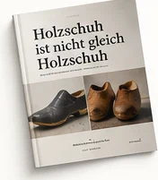
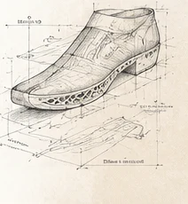

Die hölzerne Sohle
Eine Geschichte von Materialien, Menschen und Maschinen.
Vom einfachen Holzschuh bis zu den Technologien von morgen – eine digitale Ausstellung über die Entwicklung der Schuhsohle.
Gestern
Ursprung und Entwicklung
Warum wurden Holzschuhe getragen? Wie entwickelten sich Handwerk, Maschinen und die industrielle Fertigung?
Mehr erfahren →Heute
Material und Anwendung
Holzsohlen werden weiterhin gefertigt. Eigene Filmaufnahmen dokumentieren die Arbeit eines Schweizer Betriebs.
Mehr erfahren →Morgen
Forschung und Möglichkeiten
Holzverbundstoffe, CNC und 3D-Druck: Welche neuen Anwendungen sind denkbar – und welche gibt es bereits?
Mehr erfahren →Aktuelle Veröffentlichung

Holzschuh ist nicht gleich Holzschuh
Ein Booklet über Materialien, Konstruktionen und historische Entwicklungen.
Bestellinformationen folgen.
Booklet anfragen →Themen im Überblick
Über dieses Projekt

Die hölzerne Sohle ist eine unabhängige Forschungs- und Dokumentationsinitiative. Sie verbindet historische Quellen, eigene Beobachtungen und neue Fragen an die Zukunft der Schuhtechnik.
Unsere Leitfrage →Quo vadis, Holzschuh?
Hat die hölzerne Schuhsohle eine Zukunft – als sichtbarer Holzschuh, als Werkstoff im modernen Sportschuh oder in noch ganz anderen Formen?
Wir unterscheiden historische Belege, bestehende Technologien und eigene Zukunftsideen.